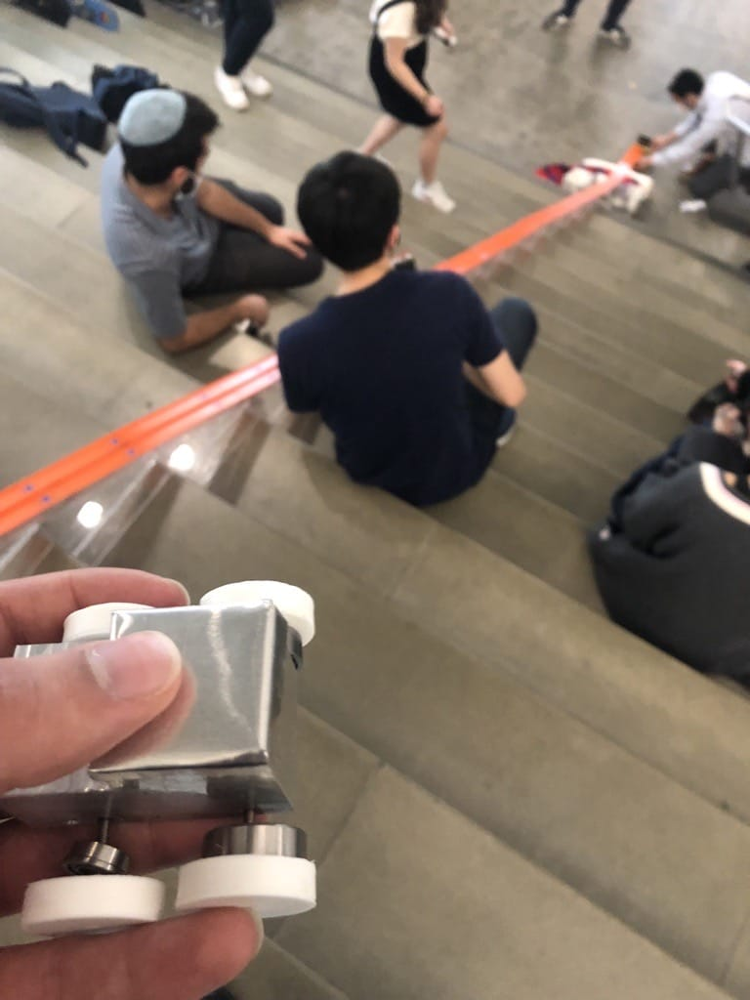

A compiled summary of the final shelf design parameters and measurements, for the shelf to carry 200 lb, have a maximum deflection of 1/2" relative to the corners, and a minimum factor of safety of 3.The software used was LaTex,OnShape,Ansys APDL, and MatLab.

A turducken is to be cooked with the addition of electric resistance skewers which may be placed through the turkey. The design of the skewers and the temperature of the oven will be designed to optimize for the fastest cook time,
with the least amount of turducken burnt.

A wind turbine has been designed for the client’s specifications. Design is optimized to reduce the cross-sectional area and weight by using ANSYS FEA. Also,it is to withstand the
extreme weather conditions of the high wind speeds and temperature fluctuations. For safe operation, the tower is to not match the
natural frequency operating range if a blade detaches.

Dimensions and materials of stone topped desk was designed to withstand a specified load using ANSYS APDL. The deformation and stresses experienced by each component was ensured to not fail under the load and to meet the design objectives.

Within six weeks, each team was to present a finished product that uses a natural element to generate enough voltage for charging mobile devices (5V) with the design constraint of the contraption fitting within a set cylinder size for portable use by campers.

The frame designed has the objective of providing a stable structure that brings all the components of the hyperloop pod together.
Our frame will be designed to withstand the loads and interferences between other sub-components of the pod, whilst also making it
as light as possible, and simple to manufacture. To achieve this, various primary analysis techniques and research was conducted by comparing cross-sections with both hand
calculations and FEA simulations

A car that was designed entirely in-house , with the requirement of at least one component made of sheet metal, was to be put on Hotwheels tracks down the NAB's staircase and hit a catapult that was to launch the ball the furthest. The weight of the cart and width of the wheels were set design parameters.

A study in how Freud treated his patients according to their
conforming genders, that lead to him diagnosing primarily women as hysteric, as opposed to applying a
non-gender specific theory and treating them as individuals.